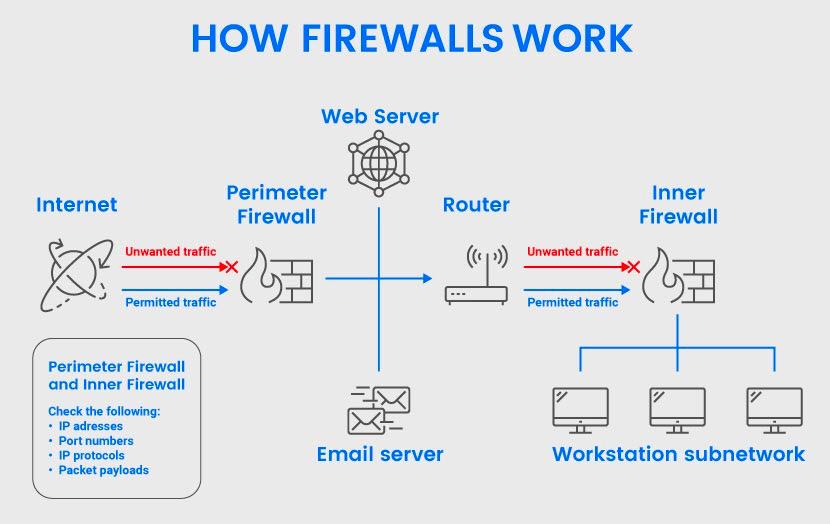
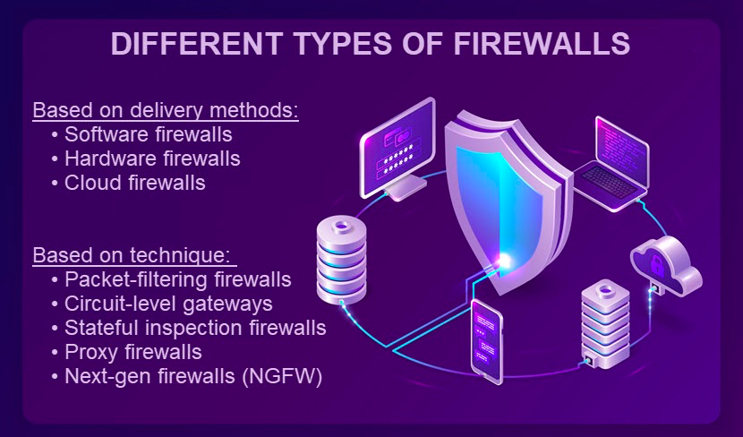
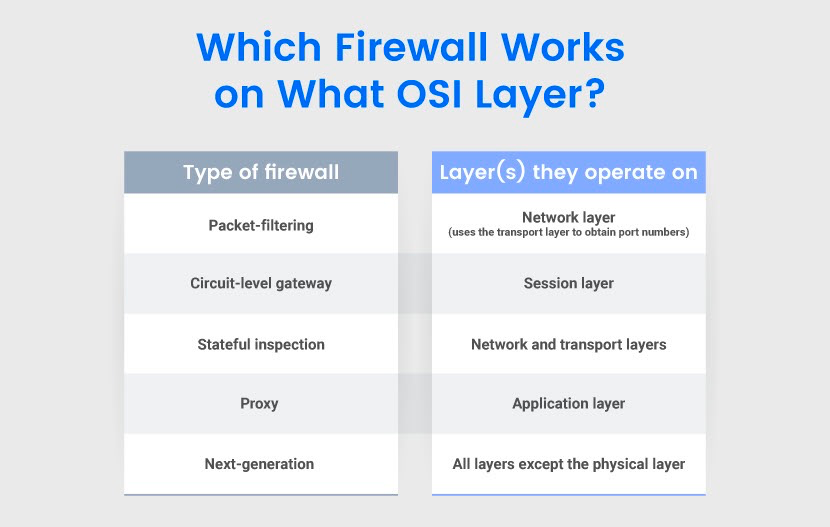

防火墙

什么是防火墙？
防火墙是一种监视网络流量并检测潜在威胁的安全设备或程序，作为一道保护屏障，它只允许非威胁性流量进入，阻止危险流量进入。
防火墙是client-server模型中网络安全的基础之一，但它们容易受到以下方面的攻击:
- 社会工程攻击（例如，有人窃取密码并进行欺诈）。
- 内部威胁（例如，内网中的某人故意更改防火墙设置）。
- 人为错误（例如，员工忘记打开防火墙或忽略更新通知）。

防火墙是如何工作的？
企业在网络中设置内联防火墙，作为外部源和受保护系统之间的边界。管理员创建阻塞点，防火墙在阻塞点检查所有进出网络的数据包，包含:
有效负载（实际内容）。
标头（有关数据的信息，例如谁发送了数据，发给了谁）。
防火墙根据预设规则分析数据包，以区分良性和恶意流量。这些规则集规定了防火墙如何检查以下内容：
- 源IP和目的IP 地址。
- 有效负载中的内容。
- 数据包协议（例如，连接是否使用 TCP/IP 协议）。
- 应用协议（HTTP、Telnet、FTP、DNS、SSH 等）。
- 表明特定网络攻击的数据模式。
防火墙阻止所有不符合规则的数据包，并将安全数据包路由到预期的接收者。当防火墙阻止流量进入网络时，有两种选择：
- 默默地放弃请求。
- 向发件人发送error信息。
这两种选择都可以将危险流量排除在网络之外。通常，安全团队更喜欢默默放弃请求以限制信息，以防潜在的黑客测试防火墙的漏洞。
基于部署方式的防火墙类型
根据部署方式，可以将防火墙分为三种类型：硬件防火墙、软件防火墙和基于云的防火墙。

软件防火墙
软件防火墙（或主机防火墙）直接安装在主机设备上。这种类型的防火墙只保护一台机器（网络终端、台式机、笔记本电脑、服务器等），因此管理员必须在他们想要保护的每台设备上安装一个版本的软件。
由于管理员将软件防火墙附加到特定设备上，因此这些防火墙不可避免地会占用一些系统 RAM 和 CPU，这在某些情况下是一个问题。
软件防火墙的优点：
- 为指定设备提供出色的保护。
- 将各个网络端点彼此隔离。
- 高精度的安全性，管理员可以完全控制允许的程序。
- 随时可用。
软件防火墙的缺点：
消耗设备的 CPU、RAM 和存储空间。
需要为每个主机设备配置。
日常维护既困难又耗时。
并非所有设备都与每个防火墙兼容，因此可能必须在同一网络中使用不同的解决方案。
硬件防火墙
硬件防火墙（或设备防火墙）是一个单独的硬件，用于过滤进出网络的流量。与软件防火墙不同，这些独立设备有自己的资源，不会占用主机设备的任何 CPU 或 RAM。
硬件防火墙相对更适合大型企业，中小型企业可能更多地会选择在每台主机上安装软件防火墙的方式，硬件防火墙对于拥有多个包含大量计算机的子网的大型组织来说是一个极好的选择。
硬件防火墙的优点：
- 使用一种解决方案保护多台设备。
- 顶级边界安全性，因为恶意流量永远不会到达主机设备。
- 不消耗主机设备资源。
- 管理员只需为整个网络管理一个防火墙。
硬件防火墙的缺点：
比软件防火墙更昂贵。
内部威胁是一个相当大的弱点。
与基于软件的防火墙相比，配置和管理需要更多的技能。
基于云的防火墙
许多供应商提供基于云的防火墙，它们通过 Internet 按需提供。这些服务也称为防火墙即服务（FaaS），以IaaS 或 PaaS的形式运行。
基于云的防火墙非常适用于：
- 高度分散的业务。
- 在安全资源方面存在缺口的团队。
- 不具备必要的内部专业知识的公司。
与基于硬件的解决方案一样，云防火墙在边界安全方面表现出色，同时也可以在每个主机的基础上设置这些系统。
云防火墙的优点：
- 服务提供商处理所有管理任务（安装、部署、修补、故障排除等）。
- 用户可以自由扩展云资源以满足流量负载。
- 无需任何内部硬件。
- 高可用性。
云防火墙的缺点：
- 供应商究竟如何运行防火墙缺乏透明度。
- 与其他基于云的服务一样，这些防火墙很难迁移到新的提供商。
- 流量流经第三方可能会增加延迟和隐私问题。
- 由于高昂的运营成本，从长远来看是比较贵的。
基于操作方法的防火墙类型
下面是基于功能和 OSI 模型的五种类型的防火墙。

包过滤防火墙
包过滤防火墙充当网络层的检查点，并将每个数据包的标头信息与一组预先建立的标准进行比较。这些防火墙检查以下基于标头的信息：
- 目的地址和源 IP 地址。
- 数据包类型。
- 端口号。
- 网络协议。
这些类型的防火墙仅分析表面的细节，不会打开数据包来检查其有效负载。包过滤防火墙在不考虑现有流量的情况下真空检查每个数据包。 包过滤防火墙非常适合只需要基本安全功能来抵御既定威胁的小型组织。
包过滤防火墙的优点：
- 低成本。
- 快速包过滤和处理。
- 擅长筛选内部部门之间的流量。
- 低资源消耗。
- 对网络速度和最终用户体验的影响最小。
- 多层防火墙策略中出色的第一道防线。
包过滤防火墙的缺点：
不检查数据包有效负载（实际数据）。
对于有经验的黑客来说很容易绕过。
无法在应用层进行过滤。
容易受到 IP 欺骗攻击，因为它单独处理每个数据包。
没有用户身份验证或日志记录功能。
访问控制列表的设置和管理具有挑战性。
电路级网关
电路级网关在 OSI 会话层运行，并监视本地和远程主机之间的TCP（传输控制协议）握手。其可以在不消耗大量资源的情况下快速批准或拒绝流量。但是，这些系统不检查数据包，因此如果 TCP 握手通过，即使是感染了恶意软件的请求也可以访问。
电路级网关的优点：
- 仅处理请求的事务，并拒绝所有其他流量。
- 易于设置和管理。
- 资源和成本效益。
- 强大的地址暴露保护。
- 对最终用户体验的影响最小。
电路级网关的缺点：
不是一个独立的解决方案，因为没有内容过滤。
通常需要对软件和网络协议进行调整。
状态检测防火墙
状态检测防火墙（或动态包过滤防火墙）在网络层和传输层监控传入和传出的数据包。这类防火墙结合了数据包检测和 TCP 握手验证。
状态检测防火墙维护一个表数据库，该数据库跟踪所有打开的连接使系统能够检查现有的流量流。该数据库存储所有与关键数据包相关的信息，包括：
- 源IP。
- 源端口。
- 目的 IP。
- 每个连接的目标端口。
当一个新数据包到达时，防火墙检查有效连接表。检测过的数据包无需进一步分析即可通过，而防火墙会根据预设规则集评估不匹配的流量。
状态检测防火墙的优点：
- 过滤流量时会自动通过以前检查过的数据包。
- 在阻止利用协议缺陷的攻击方面表现出色。
- 无需打开大量端口来让流量进出，这可以缩小攻击面。
- 详细的日志记录功能，有助于数字取证。
- 减少对端口扫描器的暴露。
状态检测防火墙的缺点：
比包过滤防火墙更昂贵。
需要高水平的技能才能正确设置。
通常会影响性能并导致网络延迟。
不支持验证欺骗流量源的身份验证。
容易受到利用预先建立连接的 TCP Flood攻击。
代理防火墙
代理防火墙（或应用级网关）充当内部和外部系统之间的中介。这类防火墙会在客户端请求发送到主机之前对其进行屏蔽，从而保护网络。
代理防火墙在应用层运行，具有深度包检测 (DPI)功能，可以检查传入流量的有效负载和标头。
当客户端发送访问网络的请求时，消息首先到达代理服务器。
防火墙会检查以下内容：
- 客户端和防火墙后面的设备之间的先前通信（如果有的话）。
- 标头信息。
- 内容本身。
然后代理屏蔽该请求并将消息转发到Web 服务器。此过程隐藏了客户端的 ID。服务器响应并将请求的数据发送给代理，之后防火墙将信息传递给原始客户端。
代理防火墙是企业保护 Web应用免受恶意用户攻击的首选。
代理防火墙的优点：
- DPI检查数据包标头和有效负载 。
- 在客户端和网络之间添加了一个额外的隔离层。
- 对潜在威胁行为者隐藏内部 IP 地址。
- 检测并阻止网络层不可见的攻击。
- 对网络流量进行细粒度的安全控制。
- 解除地理位置限制。
代理防火墙的缺点：
由于彻底的数据包检查和额外的通信步骤，会导致延迟增加。
由于处理开销高，不如其他类型的防火墙成本低。
设置和管理具有挑战性。
不兼容所有网络协议。
下一代防火墙
下一代防火墙(NGFW)是将其他防火墙的多种功能集成在一起的安全设备或程序。这样的系统提供：
- 分析流量内容的深度数据包检测（DPI）。
- TCP 握手检查。
- 表层数据包检测。
下一代防火墙还包括额外的网络安全措施，例如：
- IDS 和 IPS。
- 恶意软件扫描和过滤。
- 高级威胁情报（模式匹配、基于协议的检测、基于异常的检测等）
- 防病毒程序。
- 网络地址转换 (NAT)。
- 服务质量 (QoS)功能。
- SSH检查。
NGFW 是医疗保健或金融等受到严格监管的行业的常见选择。
下一代防火墙的优点：
- 将传统防火墙功能与高级网络安全功能相结合。
- 检查从数据链路层到应用层的网络流量。
- 日志记录功能。
下一代防火墙的缺点：
- 比其他防火墙更昂贵。
- 存在单点故障。
- 部署时间缓慢。
- 需要高度的专业知识才能设置和运行。
- 影响网络性能。
任何一个保护层，无论多么强大，都不足以完全保护你的业务。企业往往会在同一个网络中设置多个防火墙，选择理想的防火墙首先要了解企业网络的架构和功能，确定这些不同类型的防火墙和防火墙策略哪个最适合自己。通常情况下，企业网络应该设置多层防火墙，既在外围保护又在网络上分隔不同的资产，从而使你的网络更难破解。
本博客所有文章除特别声明外，均采用 CC BY-SA 4.0 协议 ，转载请注明出处！